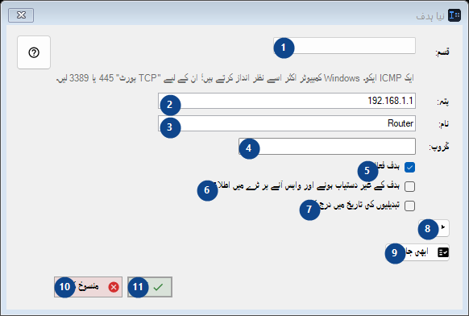
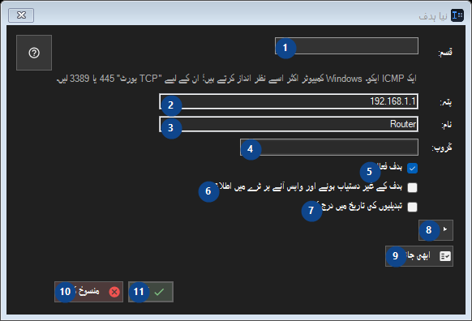

نیا ہدف
مقصد
نمبر وار وضاحتیں پڑھیں، مطلوبہ اقدار منتخب کریں اور ونڈو کے حکم سے آگے بڑھیں۔


استعمال کی ترتیب
نمبر وار وضاحتیں پڑھیں، مطلوبہ اقدار منتخب کریں اور ونڈو کے حکم سے آگے بڑھیں۔
عناصر
1. قسم:
ساتھ کے لیبل کے مطابق قدر منتخب یا درج کریں۔ آگے بڑھنے سے پہلے جانچیں۔
آپ کے شارٹ کٹ2. قسم:
ساتھ کے لیبل کے مطابق قدر منتخب یا درج کریں۔ آگے بڑھنے سے پہلے جانچیں۔
آپ کے شارٹ کٹ3. قسم:
ساتھ کے لیبل کے مطابق قدر منتخب یا درج کریں۔ آگے بڑھنے سے پہلے جانچیں۔
آپ کے شارٹ کٹ4. قسم:
ساتھ کے لیبل کے مطابق قدر منتخب یا درج کریں۔ آگے بڑھنے سے پہلے جانچیں۔
آپ کے شارٹ کٹ5. ہدف فعال ہے
درج شدہ کارروائی کے لیے یہ حکم استعمال کریں۔ قبول کرنے سے پہلے تصدیق پڑھیں۔
آپ کے شارٹ کٹ6. ہدف کے غیر دستیاب ہونے اور واپس آنے پر ٹرے میں اطلاع دیں
درج شدہ کارروائی کے لیے یہ حکم استعمال کریں۔ قبول کرنے سے پہلے تصدیق پڑھیں۔
آپ کے شارٹ کٹ7. تبدیلیوں کی تاریخ میں درج کریں
درج شدہ کارروائی کے لیے یہ حکم استعمال کریں۔ قبول کرنے سے پہلے تصدیق پڑھیں۔
آپ کے شارٹ کٹ8. ▸ اعلیٰ
درج شدہ کارروائی کے لیے یہ حکم استعمال کریں۔ قبول کرنے سے پہلے تصدیق پڑھیں۔
آپ کے شارٹ کٹ9. ابھی جانچیں
درج شدہ کارروائی کے لیے یہ حکم استعمال کریں۔ قبول کرنے سے پہلے تصدیق پڑھیں۔
آپ کے شارٹ کٹ10. منسوخ کریں
درج شدہ کارروائی کے لیے یہ حکم استعمال کریں۔ قبول کرنے سے پہلے تصدیق پڑھیں۔
آپ کے شارٹ کٹ11. OK
درج شدہ کارروائی کے لیے یہ حکم استعمال کریں۔ قبول کرنے سے پہلے تصدیق پڑھیں۔
آپ کے شارٹ کٹ